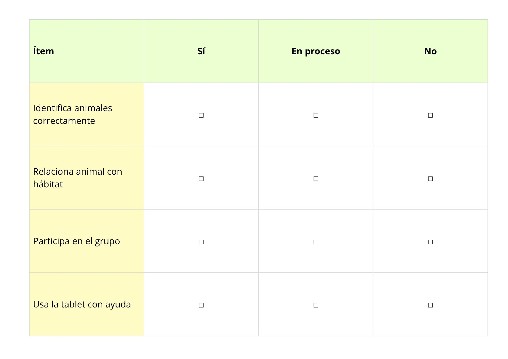
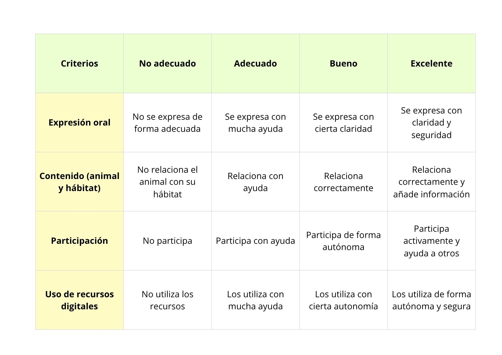
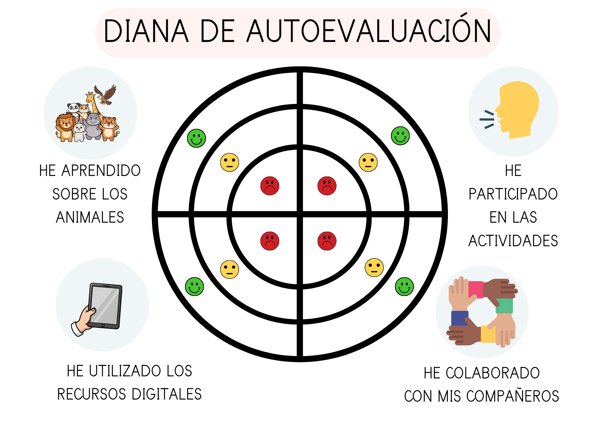

Instrumentos de evaluación de la SdA
En la presenta SdA se han diseñado diferentes instrumentos de evaluación con el objetivo de recoger información sobre el proceso de aprendizaje de mi alumnado de Educación Infantil (5 años), teniendo en cuenta sus características evolutivas y el enfoque globalizado de la etapa.
La evaluación se plantea como un proceso continuo, formativo y adaptado, que permite observar el desarrollo de competencias, la participación y el uso de herramientas digitales en el aula.
1. Instrumento: Lista de cotejo (observación directa)
Este instrumento se utilizará durante:
- Actividades de clasificación de animales y hábitats
- Trabajo en pequeños grupos
- Uso de herramientas digitales (tabletas, juegos interactivos)
Con este instrumento evaluaremos:
- Identificación de animales
- Relación entre animales y hábitats
- Participación en actividades
- Uso básico de herramientas digitales
- Interacción con el grupo
Ejemplo de una lista de cotejo:

La información se recogerá mediante la observación directa durante las actividades y se registrará en el cuaderno docente. Este instrumento nos permitirá identificar:
- Nivel de comprensión
- Grado de participación
- Necesidad de apoyo individual
Los datos obtenidos permitirán:
- Adaptar las actividades a las necesidades del grupo
- Reorganizar agrupamientos
- Diseñar refuerzos educativos
2. Instrumento: Rúbrica del producto final (Museo)
Este instrumento se utilizará durante:
- Exposición del museo
- Explicación oral del alumnado
Con este instrumento evaluaremos:
- Expresión oral
- Comprensión de contenidos
- Participación
- Uso de recursos digitales
Ejemplo de una rúbrica:

Se realizará mediante la observación directa durante la exposición del alumnado. Este instrumento nos permitirá analizar:
- Nivel de aprendizaje adquirido
- Capacidad de comunicación
- Grado de implicación
Los datos obtenidos permitirán:
- Evaluar el producto final
- Valorar aprendizajes significativos
- Mejorar futuras propuestas didácticas
3. Instrumento: Diana de autoevaluación
Este instrumento se utilizará al finalizar la situación de aprendizaje. Con este instrumento evaluaremos:
- Percepción del propio aprendizaje
- Participación
- Uso de herramientas digitales
- Motivación
Ejemplo de una diana de autoevaluación:

El alumnado coloreará los niveles de la diana según su percepción. Esto nos permitirá obtener información sobre:
- Motivación
- Autoevaluación
- Nivel de satisfacción
Los datos obtenidos permitirán:
- Fomentar la reflexión del alumnado
- Mejorar la implicación
- Ajustar la práctica docente
Durante la aplicación de estos instrumentos se tendrán en cuenta los diferentes ritmos de aprendizaje, el nivel de desarrollo del lenguaje, el grado de autonomía y la participación dentro del grupo.
Se realizarán adaptaciones en función de las necesidades del alumnado, ajustando la ayuda proporcionada, el tipo de actividad y el nivel de exigencia.